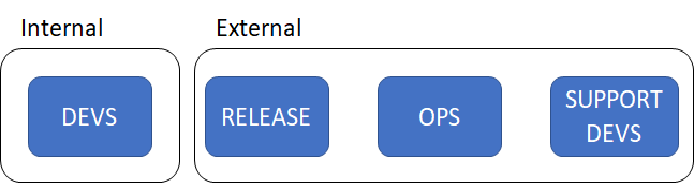
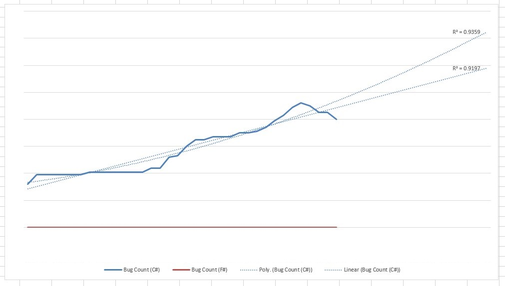
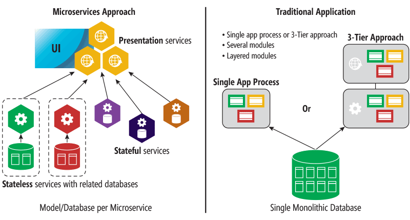
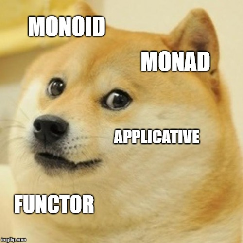

val doStuff : (obj -> obj)
Full name: index.doStuff
Full name: index.doStuff
val doStuff : f:('a -> 'b) -> g:('b -> 'c) -> a:'a -> 'c
Full name: index.doStuff
Full name: index.doStuff
val f : ('a -> 'b)
val g : ('a -> 'b)
val a : 'a
val y : 'a
type Trade =
{Product: string;
Volume: float;}
static member Create : product:string * volume:float -> Trade
Full name: index.Trade
{Product: string;
Volume: float;}
static member Create : product:string * volume:float -> Trade
Full name: index.Trade
Trade.Product: string
Multiple items
val string : value:'T -> string
Full name: Microsoft.FSharp.Core.Operators.string
--------------------
type string = System.String
Full name: Microsoft.FSharp.Core.string
val string : value:'T -> string
Full name: Microsoft.FSharp.Core.Operators.string
--------------------
type string = System.String
Full name: Microsoft.FSharp.Core.string
Trade.Volume: float
Multiple items
val float : value:'T -> float (requires member op_Explicit)
Full name: Microsoft.FSharp.Core.Operators.float
--------------------
type float = System.Double
Full name: Microsoft.FSharp.Core.float
--------------------
type float<'Measure> = float
Full name: Microsoft.FSharp.Core.float<_>
val float : value:'T -> float (requires member op_Explicit)
Full name: Microsoft.FSharp.Core.Operators.float
--------------------
type float = System.Double
Full name: Microsoft.FSharp.Core.float
--------------------
type float<'Measure> = float
Full name: Microsoft.FSharp.Core.float<_>
static member Trade.Create : product:string * volume:float -> Trade
Full name: index.Trade.Create
Full name: index.Trade.Create
val product : string
val volume : float
static member Trade.Create : product:string * volume:float -> Trade
val trade : Trade
Full name: index.trade
Full name: index.trade
val b : 'b
type ProductRepository =
{Get: string -> obj;
Save: obj -> unit;}
Full name: index.ProductRepository
{Get: string -> obj;
Save: obj -> unit;}
Full name: index.ProductRepository
ProductRepository.Get: string -> obj
ProductRepository.Save: obj -> unit
type unit = Unit
Full name: Microsoft.FSharp.Core.unit
Full name: Microsoft.FSharp.Core.unit
type IProductRepository =
interface
abstract member Get : string -> 'a0
abstract member Save : 'a0 -> unit
end
Full name: index.IProductRepository
interface
abstract member Get : string -> 'a0
abstract member Save : 'a0 -> unit
end
Full name: index.IProductRepository
abstract member IProductRepository.Get : string -> 'a0
Full name: index.IProductRepository.Get
Full name: index.IProductRepository.Get
abstract member IProductRepository.Save : 'a0 -> unit
Full name: index.IProductRepository.Save
Full name: index.IProductRepository.Save
val saveTrade : trade:'a -> 'b
Full name: index.DataAccess.saveTrade
Full name: index.DataAccess.saveTrade
val trade : 'a
val doStuff : unit -> 'a
Full name: index.StatefulModule.doStuff
Full name: index.StatefulModule.doStuff
Multiple items
type StatefulObject =
new : myState:obj -> StatefulObject
Full name: index.StatefulObject
--------------------
new : myState:obj -> StatefulObject
type StatefulObject =
new : myState:obj -> StatefulObject
Full name: index.StatefulObject
--------------------
new : myState:obj -> StatefulObject
val myState : obj
val mutable state : obj
val update : ('a -> 'b -> 'c -> 'd)
val eventHub : 'a
type 'T option = Option<'T>
Full name: Microsoft.FSharp.Core.option<_>
Full name: Microsoft.FSharp.Core.option<_>
val f : 'a
Multiple items
type TradeService =
new : eventHub:obj -> TradeService
member UpdateTrade : trade:Trade * updateFunc:'a0 -> 'a1
Full name: index.TradeService
--------------------
new : eventHub:obj -> TradeService
type TradeService =
new : eventHub:obj -> TradeService
member UpdateTrade : trade:Trade * updateFunc:'a0 -> 'a1
Full name: index.TradeService
--------------------
new : eventHub:obj -> TradeService
val eventHub : obj
val x : TradeService
member TradeService.UpdateTrade : trade:Trade * updateFunc:'a0 -> 'a1
Full name: index.TradeService.UpdateTrade
Full name: index.TradeService.UpdateTrade
val trade : Trade
val updateFunc : 'a
val newTrade : 'a
val raise : exn:System.Exception -> 'T
Full name: Microsoft.FSharp.Core.Operators.raise
Full name: Microsoft.FSharp.Core.Operators.raise
val attemptReadMapProduct : row:'a -> 'b
Full name: index.attemptReadMapProduct
Full name: index.attemptReadMapProduct
val row : 'a
module String
from Microsoft.FSharp.Core
from Microsoft.FSharp.Core
val attemptReadMapProduct : row:'a -> obj
Full name: index.attemptReadMapProduct
Full name: index.attemptReadMapProduct
val ma : obj
val prod : 'a
val foo : 'a
Full name: index.foo
Full name: index.foo
val writeLine : 'a
Full name: index.writeLine
Full name: index.writeLine
Easing F# Adoption
Not about idomatic code
Scaling the F# message
Some context first
Enterprises aren't software houses
They do not aspire to be best in market with software, but they do recongise the value of software.
Nobody got fired for hiring {insert-consultancy-here}
An outsourced enterprise

The Stack Overflow survey

But there is a bigger problem
C# Is really quiet good at this stuff

How do we deal with this?
Advertise F# features
- Pattern matching / Active Patters
- Type providers
- Async
- Immutability
- Discriminated Unions
- etc..
Use quantative evidence

Use Gateway drugs
- Build
- Dev ops scripts
- Generate Test data
Consider your environment
How can I apply F# with minimal fuss
Lower mismatch with C#

Composing with let
1:
|
|
vs
1: 2: 3: |
|
Arrgh! Custom operators
1: 2: 3: 4: 5: 6: 7: 8: |
|
vs
1: 2: 3: 4: 5: 6: |
|
Oh yeah! Member constraints
1: 2: |
|
Interfaces or Record of functions
1: 2: 3: 4: |
|
vs
1: 2: 3: |
|
Write interop interfaces in C#
- Carefully consider how you expose FSharp.Core
- Consider using
[<CompiledName>]attribute - Try to limit sharing to value types.
Utilise the .NET ecosystem
- Giraffe and ASPNET Core
- Newtonsoft.Json
- PdfSharp
- etc..
Structuring modules

image - http://houseofbots.com/news-detail/519-1-monolithic-to-microservices-architecture-scalable-approach
1: 2: 3: 4: 5: 6: 7: |
|
vs
1: 2: 3: 4: 5: |
|
As for the stateful ones
1: 2: 3: 4: 5: |
|
prefer objects
1: 2: 3: 4: 5: |
|
Consider dependencies
1: 2: 3: |
|
vs
1: 2: 3: 4: 5: 6: |
|
Select your abstractions wisely

These are all super powerful abstractions
Consider the next reader for the best result.
1: 2: 3: 4: 5: 6: |
|
vs
1: 2: 3: 4: 5: 6: |
|
But do you really need
1: 2: |
|
or
1: 2: |
|
Probably not.
Limit to well known abstractions
- Maybe
- Result / Attempt
- Async
F# <> Haskell
In summary
- If you can explain it in a way that scales use it
- If not introduce a stepping stone
- Rinse and repeat
Thanks for listening!!
Twitter: @colinbul